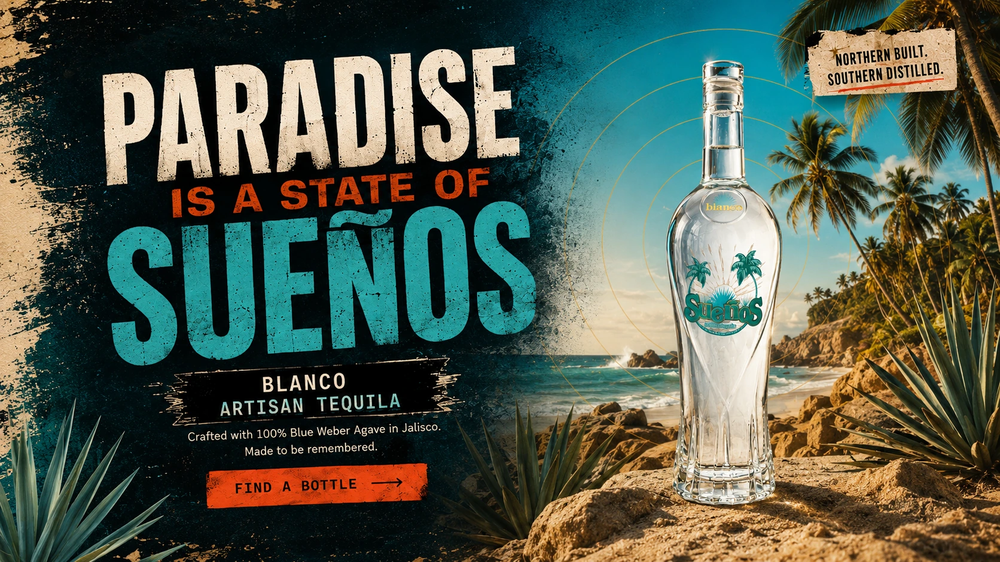

100% Blue Weber Agave
Grown in Jalisco’s volcanic soil.

Made in Jalisco, México, from 100% Blue Weber agave. Sueños is Canadian-owned, rooted in British Columbia and bottled at 40% ABV.
Grown in Jalisco’s volcanic soil.
Produced and bottled in México.
Founded in British Columbia.
Fresh agave, citrus, mineral notes and a clean finish.

Sueños began with Gord Erickson’s connection to Mexico and a simple idea: paradise should feel closer to home. Canadian-owned and made in Jalisco, Sueños Blanco is built for shared tables, lingering sunlight and ordinary nights worth remembering.
Read Our Story

From a classic Margarita to the Don Terry, explore simple recipes that keep Sueños Blanco at the centre.

Bright, classic and tequila-forward.
View Recipe →
Fresh citrus, bubbles and patio energy.
View Recipe →
Richer, slower and built for the night.
View Recipe →
A bright citrus classic with a sunset finish.
View Recipe →
Clean, crisp and made for hot afternoons.
View Recipe →
Ginger, lime and a little copper-mug drama.
View Recipe →
Dark fruit, ginger snap and a little bite.
View Recipe →
Big citrus energy in a clay cup.
View Recipe →
Pineapple-forward and quietly tropical.
View Recipe →
Tequila, pineapple and soda.
View Recipe →Search by city, postal code or current location to find participating retailers near you. Inventory can change, so confirm availability directly with the retailer.
Please confirm you are of legal drinking age in your location.